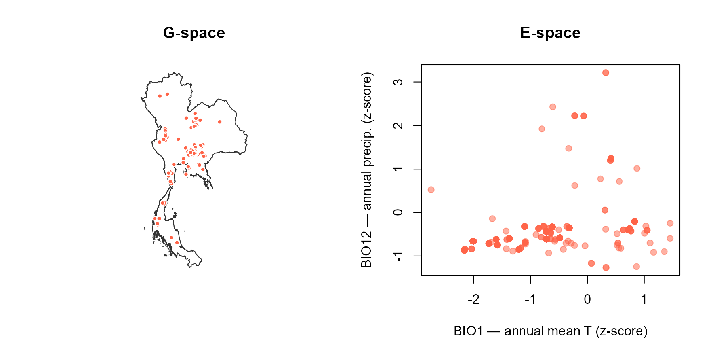
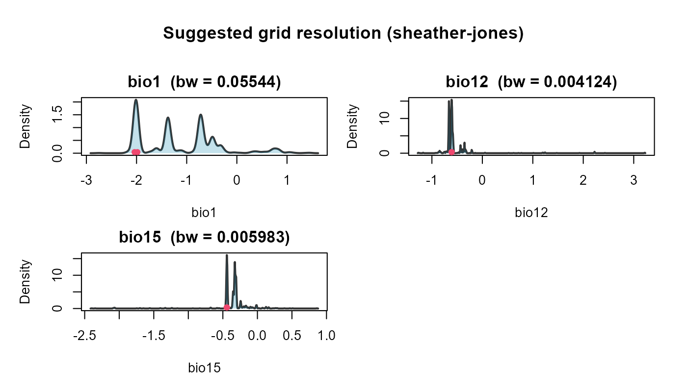
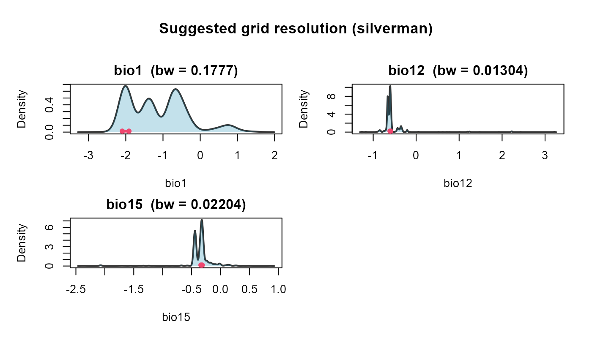
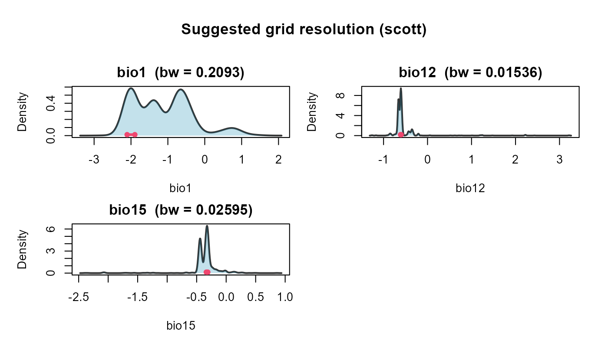

Overview
Workshop navigation
- Pre-workshop — Downloading the workshop data. Get the Thailand boundary, WorldClim climate layers, and GBIF Sambar records before the workshop starts.
- Step 1: nicheR — Virtual species with nicheR. Build a virtual species niche and map it.
- Step 2: bean — Environmental thinning with bean. Reduce environmental sampling bias before fitting a real niche.
- Step 3: TemporalModelR — Temporally-explicit models with TemporalModelR. Link species occurrences with environmental data through time.
Some occurrence datasets are heavily biased: field collecting sample in easily accessible places (roads, protected areas, research stations) far more often than remote interiors, so the records cluster on the map. The classical fix is to thin in geographic space (G-space), keep at most one point per spatial grid cell. That removes spatial duplication, but it has a hidden cost: two records that sit close together on the map can capture very different environmental conditions (one on a ridge, one in a valley), and G-space thinning discards that information.
bean solves the problem differently. It thins in
environmental space (E-space), keeping at most one point per
cell of an environmental grid. The intuition is that two occurrences
with nearly identical climate values are environmentally
redundant, no matter how far apart they are on the map. Thinning
per environmental cell (one “pod”) therefore produces a more even
coverage of the species’ niche and a less biased niche estimate.
In this Step we will:
- Load the cleaned GBIF occurrences for Sambar deer in Thailand
(written by
Pre-workshop.Rmd). - Prepare the occurrences for
beanand visualise the bias in E-space. - Find an objective environmental grid resolution.
- Thin the points with both methods (
thin_env_ndstochastic,thin_env_centerdeterministic). - Fit an ellipsoid niche on the thinned points and map suitability back to G-space.
All function names and arguments below follow the official package documentation: https://paanwaris.github.io/bean/
Install and load packages
# ---- CRAN dependencies -----------------------------------------------------
cran_pkgs <- c(
"terra",
"sf",
"dplyr",
"readr",
"rmarkdown",
"knitr",
"remotes",
"rgl",
"bean"
)
library(bean) # environmental thinning in E-space
library(terra) # modern raster + vector spatial backend
library(sf) # tidy vector spatial data ("simple features")
library(dplyr) # tidy data manipulation
library(readr) # fast, friendly CSV reading and writing
library(rgl) # interactive 3-D rendering for the ellipsoid plots
# rgl::setupKnitr() lets knitr embed any rgl/WebGL plot as a rotatable
# widget directly in the rendered HTML page.
rgl::setupKnitr(autoprint = TRUE)
# Make every random draw in the rest of the file reproducible.
set.seed(2026)
# Inputs prepared by the Pre-workshop notebook.
bioclim <- rast("data/processed/bioclim/bioclim_thailand.tif")
thailand <- st_read("data/processed/boundary/thailand_boundary.gpkg",
quiet = TRUE)
sambar <- read_csv("data/processed/gbif/sambar_thailand.csv",
show_col_types = FALSE)
head(sambar)## # A tibble: 6 × 7
## species decimalLongitude decimalLatitude year month basisOfRecord gbifID
## <chr> <dbl> <dbl> <dbl> <dbl> <chr> <dbl>
## 1 Rusa unicol… 101. 14.4 2026 1 HUMAN_OBSERV… 6.13e9
## 2 Rusa unicol… 101. 14.4 2026 1 HUMAN_OBSERV… 6.13e9
## 3 Rusa unicol… 101. 14.5 2026 1 HUMAN_OBSERV… 6.13e9
## 4 Rusa unicol… 101. 14.4 2026 1 HUMAN_OBSERV… 6.13e9
## 5 Rusa unicol… 101. 14.5 2026 1 HUMAN_OBSERV… 6.13e9
## 6 Rusa unicol… 101. 14.5 2026 1 HUMAN_OBSERV… 6.13e9For this exercise we use three bioclim variables, which map the Sambar deer habitat (warm, wet, evergreen and mixed forests).
Prepare occurrences
prepare_bean() drops rows with missing coordinates,
extracts environmental values at each occurrence, optionally rescales
the variables, and returns a tidy data frame that is ready for
thinning.
# Slim down the GBIF table to just longitude/latitude. We rename the GBIF
# coordinate columns at the same time so they match prepare_bean()'s
# expected argument names.
sambar_xy <- sambar %>%
dplyr::select(longitude = decimalLongitude,
latitude = decimalLatitude)
# prepare_bean() returns one row per occurrence with the bioclim values
# extracted at that pixel. With transform = "scale", every environmental
# column is converted to a z-score (mean 0, sd 1) — this puts BIO1, BIO12,
# and BIO15 on the same numerical scale so the thinning grid is fair.
prepped <- prepare_bean(
data = sambar_xy, # the table of coordinates
env_rasters = env, # the SpatRaster to extract from
longitude = "longitude", # name of the longitude column
latitude = "latitude", # name of the latitude column
transform = "scale" # z-score every env variable
)
# Number of usable occurrences after dropping rows that fell outside the
# raster mask or had missing coordinates.
nrow(prepped)## [1] 1031Inspect the raw points in G-space and in E-space side by side. Notice
the clustering in E-space, that is the environmental over-sampling
bean will reduce.
# Two side-by-side panels in one row.
par(mfrow = c(1, 2))
plot(st_geometry(thailand), border = "grey20", main = "G-space")
points(prepped[, c("longitude", "latitude")],
pch = 21, bg = "tomato", col = "white", cex = 0.7)
plot(prepped$bio1, prepped$bio12,
xlab = "BIO1 — annual mean T (z-score)",
ylab = "BIO12 — annual precip. (z-score)",
pch = 19,
col = adjustcolor("tomato", alpha.f = 0.5),
main = "E-space")
Reading the panels: left, every red dot is one Sambar deer GBIF record on the map of Thailand — the dots concentrate on the western mountains and the central plains because that is where surveys happen most. Right, the same records replotted in the environmental plane defined by BIO1 (annual mean temperature) and BIO12 (annual precipitation).
Choose an objective environmental resolution
find_env_resolution() derives a grid resolution for
thinning directly from the data. It does so per
variable, meaning it returns one suggested cell width
for each environmental axis (so BIO1 gets its own width, BIO12 gets a
different width, BIO15 gets yet another), each in the natural units of
that variable. The widths come from a kernel-density
bandwidth of each variable’s marginal distribution: at the
bandwidth scale, two occurrences carry essentially the same
environmental information, so it is a natural cell width below which
extra records are redundant.
Three classic bandwidth selectors are supported:
-
"sheather-jones"(default) — Sheather & Jones (1991) plug-in selector; robust to non-Gaussian shapes and the modern recommended default. -
"silverman"— Silverman’s rule of thumb; fast and stable when the distribution is roughly Gaussian. -
"scott"— Scott’s rule; the Gaussian-optimal variant of Silverman.
If Sheather–Jones fails (this can happen with strongly tied data) the function automatically falls back to Silverman’s rule for that variable and emits a message.
We will run all three selectors and compare them, then pick one to feed into the thinning step.
res_sj <- find_env_resolution(prepped,
env_vars = c("bio1", "bio12", "bio15"),
method = "sheather-jones")
res_silverman <- find_env_resolution(prepped,
env_vars = c("bio1", "bio12", "bio15"),
method = "silverman")
res_scott <- find_env_resolution(prepped,
env_vars = c("bio1", "bio12", "bio15"),
method = "scott")
# Side-by-side comparison: one column per selector, one row per variable,
# values in z-score units (we scaled the data in prepare_bean()).
cbind(
sheather_jones = res_sj$suggested_resolution,
silverman = res_silverman$suggested_resolution,
scott = res_scott$suggested_resolution
)## sheather_jones silverman scott
## bio1 0.055443572 0.17774967 0.20934961
## bio12 0.004124131 0.01304209 0.01536068
## bio15 0.005982760 0.02203666 0.02595429Read across each row to compare. Silverman and Scott are simple
plug-ins that assume a roughly Gaussian distribution, so they usually
return similar, slightly larger bandwidths, coarser
cells, fewer pods, more aggressive thinning. Sheather–Jones is
data-adaptive and is usually smaller, finer cells, more pods,
gentler thinning. For real occurrence data, which is almost never
Gaussian, we recommend "sheather-jones":
it preserves more environmental nuance and is the safest default for the
workshop.
Each method’s diagnostic plot. Each panel below is the kernel-density estimate (KDE) of one bioclim variable; the red horizontal scale bar marks the bandwidth that the selector chose — i.e. the suggested cell width.
plot(res_sj)
plot(res_silverman)
plot(res_scott)
Reading the panels: the black curve is the kernel-density estimate of how the occurrence points are distributed along that environmental axis; the shaded area under the curve helps the eye see where the bulk of the density sits; the red horizontal bar is the suggested cell width (= the bandwidth) centred on the mode of the density. A narrower bar means a finer grid and gentler thinning; a wider bar means a coarser grid and more aggressive thinning.
We will use Sheather–Jones for the rest of the analysis:
chosen_res <- res_sj$suggested_resolution
chosen_res## bio1 bio12 bio15
## 0.055443572 0.004124131 0.005982760Apply thinning
bean ships two thinning strategies:
-
thin_env_nd()— stochastic. Builds the grid, finds every occupied pod, and randomly retains one of the original occurrences in each pod. Real coordinates and GBIF metadata are preserved. -
thin_env_center()— deterministic. Builds the grid and *replaces the points in each occupied pod with